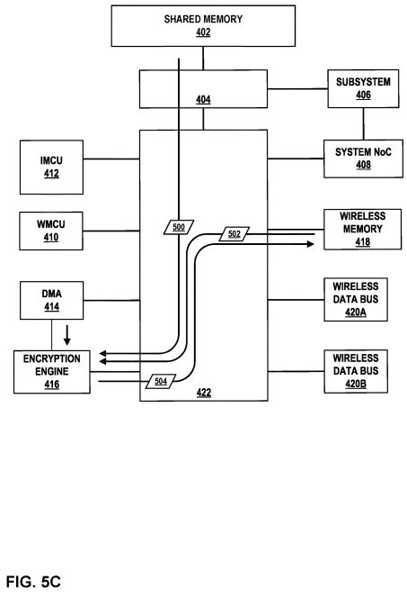

具即時加密功能的無線傳輸系統架構
技術手段
本技術提出一種無線通訊系統，具備強化資料傳輸安全與效率的技術架構。系統包含第一與第二記憶體，其中第二記憶體用來儲存需無線傳輸的應用資料。透過微處理器生成各資料封包的傳輸標頭，並將其儲存至第一記憶體。資料封包的傳輸過程透過直接記憶體存取（DMA）控制器與一組位於DMA與第二記憶體之間的即時加密引擎完成。該加密引擎負責即時接收應用資料封包、進行加密，並輸出加密後的封包，儲存於第一記憶體對應的標頭有效載區位址中。最終由無線收發器將各筆含有標頭與加密資料的傳輸封包進行無線傳輸。此結構不僅提高安全性，也提升資料搬移效率，特別適用於人工實境或虛擬實境等多裝置應用場景。
詳細說明
圖4說明一個無線通訊系統的架構，此系統透過晶片內網路（NoC）與共用記憶體（SMEM）連接，可應用於如圖3中所示的多裝置人工實境系統。整體架構中，無線通訊系統包含無線微控制器（WMCU）、隔離微控制器（IMCU）、DMA控制器、即時加密引擎、無線記憶體（WMEM）、無線資料匯流排介面與交叉交換矩陣。應用資料由子系統儲存至共用記憶體後，由隔離微控制器接收並進行封包拆分與傳輸標頭產生，接著透過DMA控制器配合，即時將應用資料加密後儲存至無線記憶體。加密引擎內嵌於DMA資料路徑中，可同時處理資料與嵌入加密向量至封包標頭中，確保資料於傳輸過程的機密性。無線微控制器則負責控制無線收發器與處理封包傳輸流程，但不具存取共用記憶體的權限，整個系統透過交叉交換矩陣實現模組間隔離與資料流通。IMCU與WMCU透過「門鈴暫存器」進行IPC訊息溝通，能有效同步封包接收與傳送狀態。這樣的架構設計強化了資料存取安全性與系統模組間的隔離，適用於高要求的無線傳輸場景如虛擬實境裝置間的資料交換。
圖5A至圖5E說明隔離微控制器（IMCU）412如何管理應用資料500，並透過無線收發器進行傳輸的完整流程。首先如圖5A所示，子系統406將應用資料（包括資料內容與封包標頭）寫入共用記憶體402中，並透過類似門鈴暫存器的機制發送訊號給IMCU，通知其有資料待傳送。這個訊號中會包含來源與目的地的識別碼，並指出資料所在的記憶體位址，同時也提供服務品質（QoS）等級，用來決定封包該進入哪個傳輸佇列。接著IMCU依據接收到的位址與QoS資訊，開始處理應用資料的切分與封包化，將完整資料依照封包大小進行分段，並為每個分段建立相對應的傳輸標頭。這些標頭資訊會被寫入無線記憶體中，準備後續由DMA控制器依據IMCU的設定，自共用記憶體中讀取應用資料並與傳輸標頭結合，再經由即時加密引擎加密後，儲存至無線記憶體中。圖中亦顯示IMCU會持續監控各步驟的狀態，並在封包處理完成後通知無線微控制器（WMCU），以便啟動封包的實際傳輸作業。整體流程透過IMCU實現應用資料與無線傳輸模組之間的隔離與資料流控制，有效提升系統安全性與穩定性，特別適合需要高可靠性與資料保護的無線應用環境。
圖5B說明隔離微控制器（IMCU）412如何依據設定的封包大小，將應用資料500切分為多個傳輸封包，並建立對應的傳輸標頭。當IMCU接收到子系統傳來的資料位置與相關指示後，會先計算出應用資料需要被拆分成幾個封包，接著針對每個封包產生一份尚未完整填寫的傳輸標頭502，這些標頭中會包含像是封包長度、封包編號等基本資訊，但仍保留加密欄位未填。產生的這些標頭會先被寫入無線記憶體418中。接下來，IMCU會透過與DMA控制器414之間獨立的資料匯流排進行設定，將應用資料各段在共用記憶體402中的位址，以及對應的傳輸標頭在無線記憶體418中的位址一併提供給DMA控制器。DMA控制器據此便能啟動資料傳輸，將資料從共用記憶體搬移到無線記憶體，並與對應的傳輸標頭進行結合。整體流程透過IMCU的運算與控制，有效確保資料封包處理的順序性與正確性，也為後續的即時加密與無線傳輸打下基礎。這樣的封包前處理機制提升了系統在高頻寬無線通訊場景中的效率與安全性。
圖5C說明DMA控制器414如何搭配即時加密引擎416，完成應用資料封包的加密與封包整合流程。當IMCU設定好資料來源與標頭位置後，DMA控制器414會從共用記憶體402讀取應用資料500，並同時從無線記憶體418抓取對應的尚未完整的傳輸標頭502，這些資料隨即經由嵌入式的即時加密引擎416處理。在資料穿越加密引擎的同時，加密引擎會即時對應用資料進行加密，並在傳輸標頭中原本預留的加密欄位內嵌入加密向量（encryption vector），這個向量對於接收端後續的解密至關重要。完成這項處理後，加密引擎會將加密後的資料與填寫完成的傳輸標頭合併成最終的傳輸封包504，並將這些封包寫入無線記憶體418中，待後續透過無線通訊單元傳送。這樣的設計使得整個加密與封包組合過程能在資料搬移的同時進行，不僅提升了系統效率，也強化了資料在無線傳輸過程中的安全性。透過硬體級加密與資料封裝整合，系統能兼顧即時性與資安，適用於虛擬實境、物聯網等需高速且保密傳輸的應用場景。

圖5D說明當傳輸封包504完成儲存至無線記憶體418後，隔離微處理器412如何透過門鈴暫存器（doorbell register）向無線微控制器發送訊號，通知這些封包已準備好可供傳送。這個通知中會包含封包所在的無線記憶體位址，讓後續的無線收發元件能依照位址正確讀取並進行發送。此外，IMCU在完成封包處理後，也會主動發送訊號給共用記憶體402，表示原本用來儲存應用資料500的記憶體區塊已經不再需要，可以釋放出來給系統重新利用。這樣的設計有效提升記憶體使用效率，避免不必要的佔用，特別是在記憶體資源有限的嵌入式或行動裝置中格外重要。透過IMCU所控制的雙向通報機制，系統在封包傳輸前後的狀態同步更加精準，不僅確保資料完整地被處理與傳送，也讓整體資源調度更具彈性與即時性。這樣的架構非常適合應用於需要高頻率資料更新與穩定傳輸的無線通訊裝置，例如AR/VR穿戴設備或車載無線模組。

圖5E說明無線微控制器（WMCU）410在接收到來自IMCU的通知後，如何建立描述子表（descriptor table）來協助無線資料匯流排介面420A與420B從無線記憶體418中擷取已加密完成的傳輸封包504。WMCU會根據每個封包的特性與需求，在描述子表中標註封包的記憶體位置與相關的服務品質（QoS）資訊，並將這份表格儲存在無線記憶體中，同時發出通知給420A與420B。接著，這兩個介面模組會先讀取描述子表，依照裡頭的QoS屬性來分配內部DMA控制器的佇列順序，確保優先等級較高的封包能優先處理與傳送。如果系統中同時處理多筆不同來源的應用資料，這些介面模組也可啟動多條DMA請求進行同步存取，例如利用scatter-gather DMA方式，將分散在記憶體中的多筆傳輸封包高效地整合起來。透過這樣的封包指派與傳輸機制，無線通訊系統能靈活應對不同應用資料的傳輸需求，在維持高傳輸率的同時也保有資料傳送的品質與穩定性，尤其適合在多工且即時性要求高的應用場景下使用，例如AR/VR裝置、穿戴式感測平台等。

圖6說明在無線資料封包形成過程中，資料結構與裝置的運作方式。首先，子系統406將應用資料500寫入共享記憶體402，並透過訊號通知隔離微控制器412資料的位置。應用資料500包括應用標頭600與應用負載602，其中標頭600包含像是來源與目的ID、負載長度等中繼資料，讓接收端能正確解析資料內容。若整筆資料大小不是加密引擎416所需的128位元倍數，系統會自動在負載後方補上虛擬位元604進行對齊。接著，隔離處理器412根據資料大小與加密引擎或無線傳輸單元的最大封包長度（MTU），將應用資料500切割為多個資料封包606，並為每個封包建立對應的傳輸標頭502儲存在無線記憶體418中。部分情況下，第一個資料封包606內會包含應用標頭600。當DMA控制器414收到應用資料封包606的位置與傳輸標頭502在無線記憶體中的位置後，會經由加密引擎416將資料進行即時加密處理，並填入標頭中的加密欄位，形成完整的傳輸封包504，再寫入無線記憶體418。最後，無線微控制器410透過無線介面匯流排420A或420B將封包504取出，加入額外的無線標頭610，產生無線封包612，再由資料匯流排將其發送出去。這樣的流程確保應用資料能被完整、安全地包裝並無線傳輸，維持傳輸效率與資料保密性。

圖7說明一個透過無線收發器傳輸儲存在共享記憶體402中的應用資料500的流程。首先，子系統406將應用資料500寫入共享記憶體402（步驟702），並通知隔離微控制器412該資料的位置（步驟704）。接下來，隔離微控制器412根據應用資料的大小決定要切割成幾個傳輸封包504，並建立初步的傳輸標頭502（步驟706），再將這些標頭儲存至無線記憶體418（步驟708）。然後，隔離微控制器412設定DMA控制器414，提供應用資料在共享記憶體中的位置與傳輸標頭在無線記憶體中的位置（步驟710），由DMA控制器執行資料擷取、加密與封包生成，產出最終的傳輸封包504（步驟712）。封包產生後，隔離微控制器會通知共享記憶體，原本存放應用資料的空間可釋放使用（步驟714），並將封包在無線記憶體中的位置告知無線微控制器410（步驟716）。最後，無線微控制器410驅動無線資料匯流排介面420A與420B，將傳輸封包504（例如透過無線封包612的形式）送出（步驟718）。整體流程確保資料從儲存、加密、封包到傳輸的每個階段都經過嚴謹控管，提升傳輸安全性與系統效率。

圖8說明一個用於將應用資料500進行即時加密並透過無線收發器傳輸的流程。首先，DMA控制器414從無線記憶體418中擷取一筆傳輸標頭502（步驟802），接著從共享記憶體402中擷取對應的應用資料封包606（步驟804）。然後，加密引擎416會將擷取到的傳輸標頭502補上加密區段，並對應用資料封包606進行加密，產出加密後的資料封包608（步驟806）。接下來，DMA控制器414會把傳輸標頭與加密後的資料封包整合成一個完整的傳輸封包504，並儲存在無線記憶體418中（步驟808）。之後，DMA控制器414判斷是否還有其他傳輸封包需要產生（步驟810）。如果還有更多封包需處理（是），流程會回到步驟802繼續擷取下一筆傳輸標頭；若已完成所有封包（否），DMA控制器414就會發出通知給隔離微控制器412，表示所有的傳輸封包504已準備好並儲存在無線記憶體418中。整個流程確保每筆應用資料在傳輸前都經過即時加密處理，並由DMA與加密引擎協同運作，自動完成封包組裝，有效提升資料傳輸的安全性與效率。